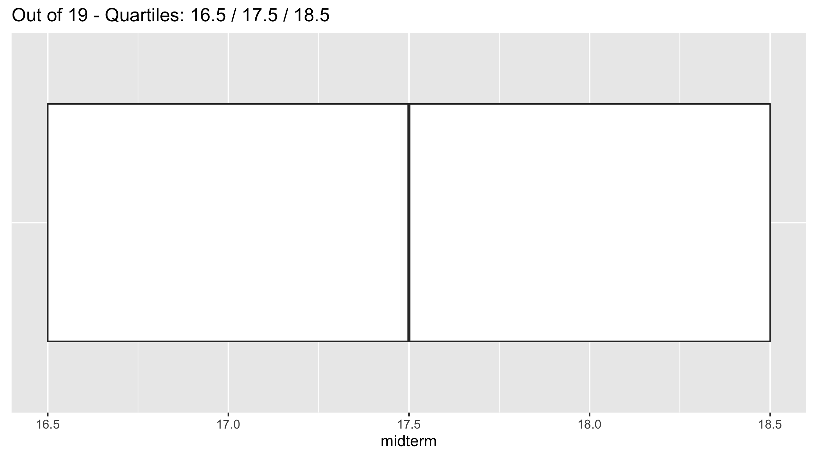

Midterms
Midterm I
Administrative notes
Friday 10/4 5pm through Sunday 10/6 11:55pm. You must submit your midterm no later than Sunday at 11:55pm.
Instructions on taking exams for Smithies and Five College Students. Print the exam in color.
Notes for before exam:
- Link to print exam in the Seelye basement lab is posted on Moodle.
- Bring colored pencils/pens.
- You do not need a calculator.
- Print exam in color.
Notes for during exam:
- Closed-book, no internet, and individually completed.
- You will be given 140 mins to complete it (including transit time to writing area), however I try to time it so that it will take much less than that. In other words, you should have plenty of time to complete it without rushing.
- Timestamps will be strictly enforced. Any timestamps indicating than more than 140 minutes are subject to a 50% penalty and an honor board case.
- In case of potential errors or ambiguity on the exam, please note them, state your assumptions, and use your best judgement.
Notes for after exam:
- Be sure to timestamp your exam before returning.
- Insert exam in appropriately labeled box in hallway.
Topics
- Topics: Lectures 1-10 inclusive (up to and including color theory in-class exercises).
- What to study:
- Practice midterm posted on Slack. We’ll go over them in Wednesday’s lecture.
- Lecture notes: both “chalk talk” and what’s on webpage.
- Problem sets and solutions.
- ModernDive readings and learning checks.
Results
Boxplot of scores (out of 34) with no whiskers below. Quartiles were 30.12 / 32 / 33.

Visualizations from midterm
Question 2.b):
library(ggplot2)
library(dplyr)
example <- tibble(
type = c("D", "B", "A", "C"),
fruit = c("apple", "apple", "orange", "orange"),
city = c("Toronto", "Montreal", "Toronto", "Montreal"),
number = c(3, 4, 2, 1)
)
ggplot(data = example, mapping = aes(x = type, y = number)) +
geom_col() +
labs(x = "Type", y = "Number")
Question 2.c):

Question 2.d):
ggplot(data = example, mapping = aes(x = fruit, y = number, fill = city)) +
geom_col(position = "dodge") +
labs(x = "Fruit", y = "Number", fill = "City")
Question 3:

Question 4, modified to show difference in proportion

Midterm II
Administrative notes
Friday 11/8 5pm through Sunday 11/10 11:55pm. You must submit your midterm no later than Sunday at 11:55pm.
Instructions on taking exams for Smithies and Five College Students. Print the exam in color.
Notes for before exam:
- Link to print exam in the Seelye basement lab is posted on Moodle.
- Bring colored pencils/pens.
- You do not need a calculator.
- Print exam in color.
Notes for during exam:
- Closed-book, no internet, and individually completed.
- You will be given 140 mins to complete it (including transit time to writing area), however I try to time it so that it will take much less than that. In other words, you should have plenty of time to complete it without rushing.
- Timestamps will be strictly enforced. Any timestamps indicating than more than 140 minutes are subject to an honor board case and depending on decision a 50% penalty.
- In case of potential errors or ambiguity on the exam, please note them, state your assumptions, and use your best judgement.
Notes for after exam:
- Be sure to timestamp your exam before returning.
- Insert exam in appropriately labeled box in hallway.
Topics
- Topics:
- Lecture 10-12. Last few topics on Data viz: Color theory, trend lines. Added on 11/6: No Shiny apps.
- Lecture 14-20. Data wrangling, “tidy” data, and importing data.
- Themes:
- The midterm is not “cummulative” in the sense that the focus will be on Lectures 10-20, but you still need to know/understand topics from Midterm I because the materials build on top of each other.
- Know how to write pseudocode like in the Available Seat Miles exercise in Lecture 19 on Wed 10/23. Click here for examples. Pseudocode is both:
- Just general enough to apply to any programming language/statistical software: R, python, SPSS, STATA, SAS, etc.
- Just specific enough that the instructions are unambigious
- Know the difference between these five joins:
left_join(),right_join(),inner_join(),full_join(), andanti_join(). Go over the code examples on the course webpage for Lec19.
- What to study. Here is my suggested order:
- Practice midterm posted on Slack under
#general_announcement: this will give you a feel for the types of questions to expect. - Read chalk talk notes: they emphasize/summarize the most important ideas.
- ModernDive Learning Check 3.20 on available seat miles (solutions in Appendix D): this is an all-encompassing problem that draws on nearly all the data wrangling verbs we’ve seen.
- ModernDive readings and learning checks: In particular the more theoretical ideas of “tidy” data.
- Problem sets 04 and 05
- Practice midterm posted on Slack under
Practice midterm notes
Question 1
## # A tibble: 1,924,665 × 5
## year sex name n prop
## <dbl> <chr> <chr> <int> <dbl>
## 1 1880 F Mary 7065 0.0724
## 2 1880 F Anna 2604 0.0267
## 3 1880 F Emma 2003 0.0205
## 4 1880 F Elizabeth 1939 0.0199
## 5 1880 F Minnie 1746 0.0179
## 6 1880 F Margaret 1578 0.0162
## 7 1880 F Ida 1472 0.0151
## 8 1880 F Alice 1414 0.0145
## 9 1880 F Bertha 1320 0.0135
## 10 1880 F Sarah 1288 0.0132
## # … with 1,924,655 more rowsQuestion 4
Based on Dear Mona Followup: Where Do People Drink The Most Beer, Wine And Spirits?.
## # A tibble: 193 × 5
## country beer_servings spirit_servings wine_servings total_litres_of…
## <chr> <int> <int> <int> <dbl>
## 1 Afghanistan 0 0 0 0
## 2 Albania 89 132 54 4.9
## 3 Algeria 25 0 14 0.7
## 4 Andorra 245 138 312 12.4
## 5 Angola 217 57 45 5.9
## 6 Antigua & Barbuda 102 128 45 4.9
## 7 Argentina 193 25 221 8.3
## 8 Armenia 21 179 11 3.8
## 9 Australia 261 72 212 10.4
## 10 Austria 279 75 191 9.7
## # … with 183 more rowsdrinks_tidy <- drinks %>%
# Convert to "tidy"
pivot_longer(cols = ends_with("servings"), names_to = "type", values_to = "servings") %>%
# Do text manipulation: only characters 1 thru 10. this trims off "_servings"
mutate(type = str_sub(type, start=1, end=-10)) %>%
arrange(country, type)
drinks_tidy## # A tibble: 579 × 4
## country total_litres_of_pure_alcohol type servings
## <chr> <dbl> <chr> <int>
## 1 Afghanistan 0 beer 0
## 2 Afghanistan 0 spirit 0
## 3 Afghanistan 0 wine 0
## 4 Albania 4.9 beer 89
## 5 Albania 4.9 spirit 132
## 6 Albania 4.9 wine 54
## 7 Algeria 0.7 beer 25
## 8 Algeria 0.7 spirit 0
## 9 Algeria 0.7 wine 14
## 10 Andorra 12.4 beer 245
## # … with 569 more rowsggplot(drinks_tidy, aes(x = type, y = servings)) +
geom_boxplot() +
labs(x = "Alcohol type", y = "Number of servings")
Question 6
You are presented with data on the Titanic disaster of 1912 in a data frame Titanic, which cross-classifies survival vs death by class, sex, and age. Write down the pseudocode of the commands that will output a table comparing survival vs death counts for the following three scenarios:
- by sex
- by sex and class and age
- to answer the question if the “women and children”-first policy of the White Star Line Company (the company that ran the Titanic) held true or not.
Note: you don’t need to calculate the output table, just write the pseudocode that would produce it where the more concise the pseudocode the better. Here is what the Titanic data looks like:\
## # A tibble: 32 × 5
## Class Sex Age Survived n
## <chr> <chr> <chr> <chr> <dbl>
## 1 1st Male Child No 0
## 2 2nd Male Child No 0
## 3 3rd Male Child No 35
## 4 Crew Male Child No 0
## 5 1st Female Child No 0
## 6 2nd Female Child No 0
## 7 3rd Female Child No 17
## 8 Crew Female Child No 0
## 9 1st Male Adult No 118
## 10 2nd Male Adult No 154
## # … with 22 more rowsSolutions
The key thing to note here is that the different combinations of Class, Sex, Age, and Survived are pre-counted in the n variable. Thus the Titanic data frame has only 32 rows. This is different than the titanic data frame from PS05 Question 2 that has 2201 rows: one for each passenger.
So the data wrangling is a little different! Here we must sum(n) whereas in PS05 we used the n() summary function to count rows.
Part a): by sex
## # A tibble: 4 × 3
## # Groups: Sex [2]
## Sex Survived n
## <chr> <chr> <dbl>
## 1 Female No 126
## 2 Female Yes 344
## 3 Male No 1364
## 4 Male Yes 367Part b): by sex, age, and class
Nothing to do! We already have Survived ("No" vs "Yes") counts split by these categories!
Part c): In retrospect this question is much harder than you can expect on the midterm. However if you’re curious:
First we need to have Survived ("No" vs "Yes") counts for each Sex and Age combinations:
## # A tibble: 8 × 4
## # Groups: Sex, Age [4]
## Sex Age Survived n
## <chr> <chr> <chr> <dbl>
## 1 Female Adult No 109
## 2 Female Adult Yes 316
## 3 Female Child No 17
## 4 Female Child Yes 28
## 5 Male Adult No 1329
## 6 Male Adult Yes 338
## 7 Male Child No 35
## 8 Male Child Yes 29Next we need to identify the “women and children”
Titanic %>%
group_by(Sex, Age, Survived) %>%
summarize(n = sum(n)) %>%
# Identify "women and children". Shout out to Adriana B. for suggesting this step to me!
mutate(w_or_c = Sex == "Female" | Age == "Child")## # A tibble: 8 × 5
## # Groups: Sex, Age [4]
## Sex Age Survived n w_or_c
## <chr> <chr> <chr> <dbl> <lgl>
## 1 Female Adult No 109 TRUE
## 2 Female Adult Yes 316 TRUE
## 3 Female Child No 17 TRUE
## 4 Female Child Yes 28 TRUE
## 5 Male Adult No 1329 FALSE
## 6 Male Adult Yes 338 FALSE
## 7 Male Child No 35 TRUE
## 8 Male Child Yes 29 TRUENext group_by() this new variable and get the sum of n
Titanic %>%
group_by(Sex, Age, Survived) %>%
summarize(n = sum(n)) %>%
# Identify "women and children". Shout out to Adriana B. for suggesting this step to me!
mutate(w_or_c = Sex == "Female" | Age == "Child") %>%
# Get counts for "women and children":
group_by(w_or_c, Survived) %>%
summarize(n = sum(n))## # A tibble: 4 × 3
## # Groups: w_or_c [2]
## w_or_c Survived n
## <lgl> <chr> <dbl>
## 1 FALSE No 1329
## 2 FALSE Yes 338
## 3 TRUE No 161
## 4 TRUE Yes 373Next compute the proportions. We haven’t done this much in class, but if you look in tips and tricks, you’ll see this is one of the rare cases we use group_by(), but not followed by a summarize() but a mutate() instead:
Titanic %>%
group_by(Sex, Age, Survived) %>%
summarize(n = sum(n)) %>%
# Identify "women and children". Shout out to Adriana B. for suggesting this step to me!
mutate(w_or_c = Sex == "Female" | Age == "Child") %>%
# Get counts for "women and children":
group_by(w_or_c, Survived) %>%
summarize(n = sum(n)) %>%
# Compute proportions:
group_by(w_or_c) %>%
mutate(
total = sum(n),
prop = n/total
)## # A tibble: 4 × 5
## # Groups: w_or_c [2]
## w_or_c Survived n total prop
## <lgl> <chr> <dbl> <dbl> <dbl>
## 1 FALSE No 1329 1667 0.797
## 2 FALSE Yes 338 1667 0.203
## 3 TRUE No 161 534 0.301
## 4 TRUE Yes 373 534 0.699Lastly, to make things easier to look at, let’s only look at Survived equals "Yes"
Titanic %>%
group_by(Sex, Age, Survived) %>%
summarize(n = sum(n)) %>%
# Identify "women and children". Shout out to Adriana B. for suggesting this step to me!
mutate(w_or_c = Sex == "Female" | Age == "Child") %>%
# Get counts for "women and children":
group_by(w_or_c, Survived) %>%
summarize(n = sum(n)) %>%
# Compute proportions:
group_by(w_or_c) %>%
mutate(
total = sum(n),
prop = n/total
) %>%
# Only survived:
filter(Survived == "Yes")## # A tibble: 2 × 5
## # Groups: w_or_c [2]
## w_or_c Survived n total prop
## <lgl> <chr> <dbl> <dbl> <dbl>
## 1 FALSE Yes 338 1667 0.203
## 2 TRUE Yes 373 534 0.699So yes, it seems “women and children first” did hold as seen by the 69.9% vs 20.3%.
Results
Boxplot of scores with no whiskers below.

Source for Questions
- Q1: Code from Lec10 on color theory and ModernDive 2.8.3 on
fillaesthetic for barplots - Q2: ModernDive 4.2.1 on “tidy” data
- Q3: PS05 - Q1.a)
- Q4: Code from Lec19 on joins
- Q5: Practice Midterm II with a few variations